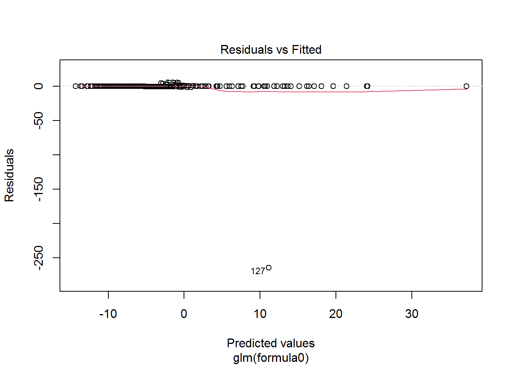

4 Fitting the Best Model
plot(fit.final)


fit.best$beta## 13 x 1 sparse Matrix of class "dgCMatrix"
## s0
## (Intercept) .
## Age .
## Sexm .
## ALB .
## ALP -0.035592285
## ALT .
## AST 0.041589191
## BIL 0.019166617
## CHE .
## CHOL -0.393023862
## CREA 0.004741066
## GGT 0.012544798
## PROT 0.045586429final.fit<-glm(train.v$Category~ALP+ALT+AST+BIL+CHOL+CREA+GGT+PROT, family = (link = "binomial"), data = train.v)## Warning: glm.fit: fitted probabilities numerically 0 or 1 occurredcomment
Cross validation is used to select the best tuning parameter for the logistic regression.We can observe that the best lambda is 0.0204.We can also observe that,the coefficient(ALP,AST and CHOL) are all negative and thus have been shrunk to 0.Thus,we are left with the variables with the positive values.Also,we can observe that all the values the parameters with positive coefficient are statistically significant.
Average of AUC and Missclassification Rate;
We can observe that the average of the AUC from the V-folds is approximately 0.96 and misclassification of 0.04.This shows that model was good in making correct with predictions.